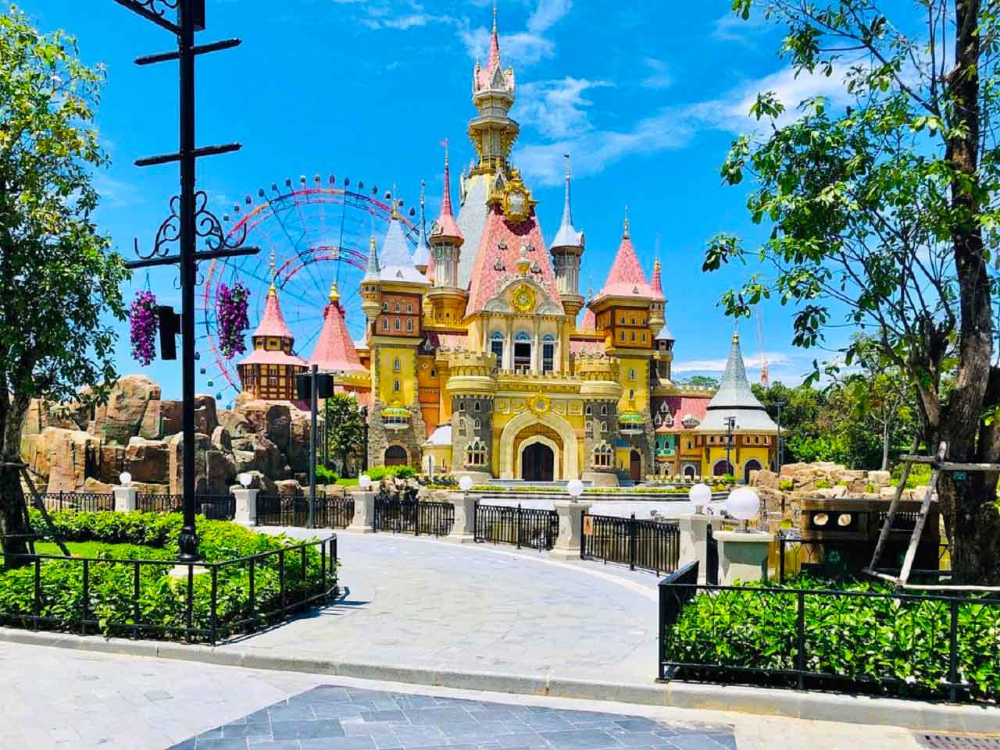
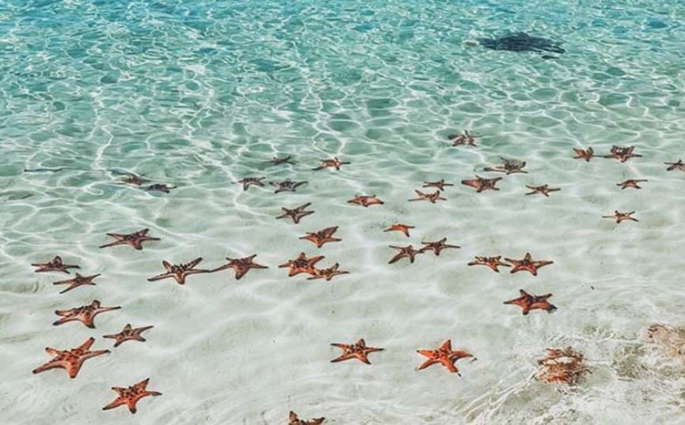
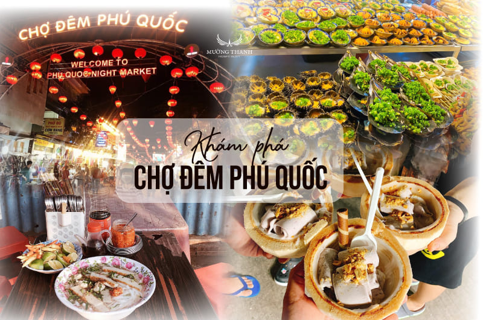
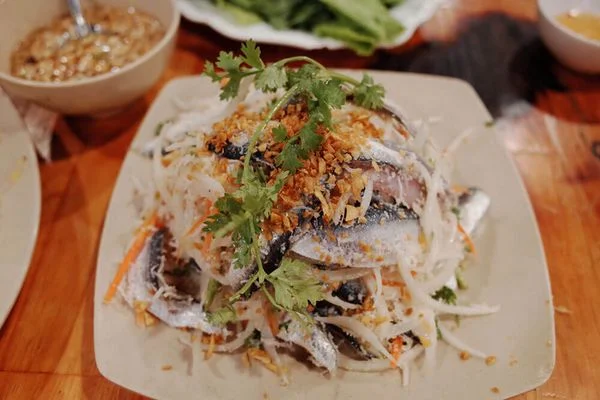
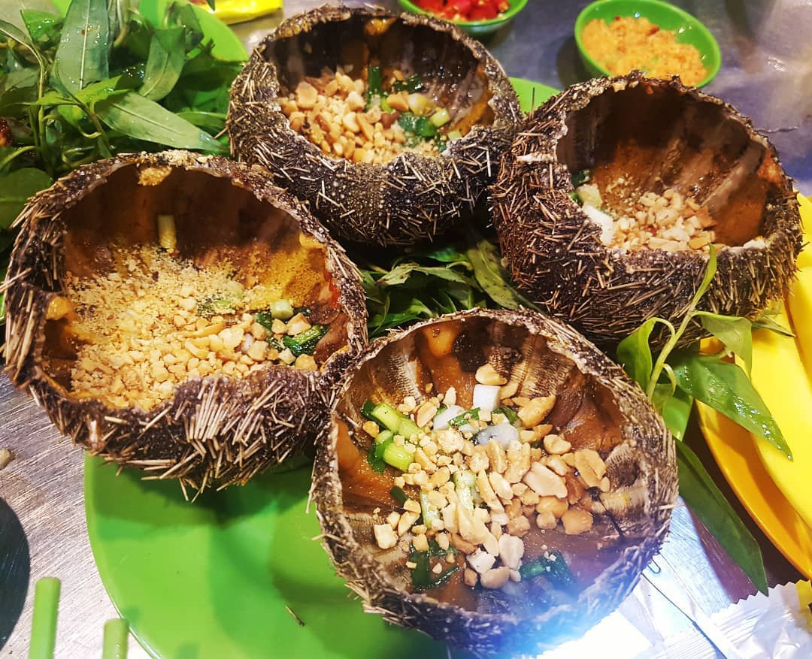
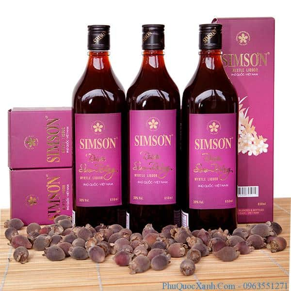

Thông Tin Tour
Giá: 5,200,000 VND
Ngày đi: 15/12/2024
Phương tiện: Máy bay lượt đi + khứ hồi và xe limousine.
Thời gian: 4 ngày 3 đêm
Giới thiệu: Tour khám phá thiên nhiên, ẩm thực và nét đẹp văn hóa Phú Quốc.
Lịch Trình Tour
- Ngày 1: Bay đến Phú Quốc, check-in khách sạn, tham quan Vinpearl Land.
- Ngày 2: Tắm biển tại Bãi Sao, tham quan chợ đêm.
- Ngày 3: Tham quan các làng chài, cơ sở sản xuất nước mắm, rượu sim.
- Ngày 4: Tự do khám phá buổi sáng, trả phòng và bay về.
Điểm Tham Quan Nổi Bật
-  Vinpearl Land Phú Quốc: Địa điểm lý tưởng với nhiều trò chơi giải trí hấp dẫn.
-  Bãi Sao: Một trong những bãi biển đẹp nhất đảo.
-  Chợ đêm Phú Quốc: Nơi thưởng thức ẩm thực địa phương và mua sắm quà lưu niệm.
Ẩm Thực Đặc Sắc
Tour sẽ giới thiệu đến du khách các món ăn nổi tiếng của Phú Quốc:
-  Gỏi cá trích: Được nêm nếm tẩm ướp vừa đủ giữ được vị ngọt tanh của cá sống.
-  Nhum nướng mỡ hành: Một món ăn được nhiều bạn trẻ ưa thích khi tới đảo ngọc.
-  Rượu sim: Được nhiều du khách lựa chọn làm quà sau mỗi chuyến đi của mình.
Phương Tiện Di Chuyển
Du khách có thể lựa chọn:
- Máy bay lượt đi + khứ hồi siêu tiện nghi.
- Xe limousine sang trọng, thoải mái.